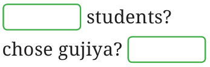
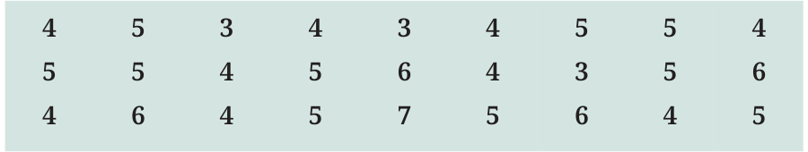

<!DOCTYPE html>
<html lang="en">
<head>
<meta charset="UTF-8">
<meta name="viewport" content="width=device-width,initial-scale=1">
<title>Figure it Out — Data Handling and Presentation</title>
<meta name="description" content="Class 6 Mathematics · Data Handling and Presentation · Figure it Out">
<link rel="icon" href="data:image/svg+xml,<svg xmlns='http://www.w3.org/2000/svg' viewBox='0 0 100 100'><text y='.9em' font-size='90'>📘</text></svg>">
<link rel="stylesheet" href="../../../assets/book.css">
<link rel="stylesheet" href="https://cdn.jsdelivr.net/npm/katex@0.16.11/dist/katex.min.css" crossorigin="anonymous">
</head>
<body>
<header class="topbar">
<div class="topbar-in">
  <div class="crumb">
    <span class="c1"><a href="../../../index.html">Library</a> · <a href="../../index.html">Class 6 Mathematics</a></span>
    <span class="c2">Data Handling and Presentation · Figure it Out</span>
  </div>
  <a class="tb-btn" data-nav="prev" href="../../04-data-handling-and-presentation/02-figure-it-out/index.html" title="Figure it Out">←</a>
  <details class="drawer"><summary class="tb-btn" title="Sections in this chapter">☰</summary>
<div class="drawer-panel"><div class="dh">Data Handling and Presentation</div><a href="../01-chapter-opener/index.html">Chapter opener; 4.1 Collecting and Organising Data</a><a href="../02-figure-it-out/index.html">Figure it Out</a><a href="../03-figure-it-out/index.html" aria-current="page">Figure it Out</a><a href="../04-figure-it-out/index.html">Figure it Out</a><a href="../05-pictographs-4.2/index.html">4.2 Pictographs</a><a href="../06-drawing-a-pictograph/index.html">Drawing a Pictograph</a><a href="../07-figure-it-out/index.html">Figure it Out</a><a href="../08-bar-graphs-4.3/index.html">4.3 Bar Graphs</a><a href="../09-figure-it-out/index.html">Figure it Out</a><a href="../10-drawing-a-bar-graph-4.4/index.html">4.4 Drawing a Bar Graph</a><a href="../11-figure-it-out/index.html">Figure it Out</a><a href="../12-artistic-and-aesthetic-considerations-4.5/index.html">4.5 Artistic and Aesthetic Considerations</a><a href="../13-figure-it-out/index.html">Figure it Out</a><a href="../14-infographics/index.html">Infographics</a><a href="../15-summary/index.html">Summary</a><a href="../16-solutions/index.html">CHAPTER 4 — SOLUTIONS</a></div></details>
  <a class="tb-btn" data-nav="next" href="../../04-data-handling-and-presentation/04-figure-it-out/index.html" title="Figure it Out">→</a>
  <button class="tb-btn" data-theme-toggle title="Toggle light / dark" aria-label="Toggle light or dark theme">◐</button>
</div>
<div class="progress"><span style="width:33.5%"></span></div>
</header>
<main class="wrap">
<div class="sec-head">
  <p class="eyebrow"><a href="../index.html">Chapter 4 · Data Handling and Presentation</a></p>
  <h1>Figure it Out</h1>
  <p class="sec-meta">Textbook pages 3–4 · 4 figures</p>
</div>
<article class="prose">
<ul class="qlist">
<li><span class="mk">1.</span><span class="lt">Complete the table to help Shri Nilesh to purchase the correct</span></li>
</ul>
<p>numbers of sweets:</p>
<ul class="qlist">
<li><span class="mk">a.</span><span class="lt">How many students chose jalebi?</span></li>
<li><span class="mk">b.</span><span class="lt">Barfi was chosen by</span></li>
</ul>
<figure class="fig"></figure>
<ul class="qlist">
<li><span class="mk">c.</span><span class="lt">How many students chose gujiya?</span></li>
<li><span class="mk">d.</span><span class="lt">Rasgulla was chosen by</span></li>
<li><span class="mk">e.</span><span class="lt">How many students chose gulab jamun?</span></li>
</ul>
<p>Shri Nilesh requested one of the staff members to bring the sweets as given in the table. The above table helped him to purchase the correct numbers of sweets.</p>
<ul class="qlist">
<li><span class="mk">2.</span><span class="lt">Is the above table sufficient to distribute each type of sweet to</span></li>
</ul>
<p>the correct student? Explain. If it is not sufficient, what is the alternative?</p>
<p>To organise the data, we can write the name of each sweet in one column and using tally signs, note the number of students who prefer that sweet. The numbers 6, 9, … are the frequencies of the sweet preferences for jalebi, gulab jamun … respectively.</p>
<p>Sushri Sandhya asked her students about the sizes of the shoes they wear. She noted the data on the board.</p>
<figure class="fig wide"></figure>
<p>She then arranged the shoe sizes of the students in ascending order \(- 3\), 3, 3, 4, 4, 4, 4, 4, 4, 4, 4, 4, 5, 5, 5, 5, 5, 5, 5, 5, 5, 5, 6, 6, 6, 6, 7</p>
</article>
<nav class="pager"><a class="" data-nav="prev" href="../../04-data-handling-and-presentation/02-figure-it-out/index.html"><span class="dir">← Previous</span><span class="t">Figure it Out</span><span class="ch">Data Handling and Presentation</span></a><a class="nx" data-nav="next" href="../../04-data-handling-and-presentation/04-figure-it-out/index.html"><span class="dir">Next →</span><span class="t">Figure it Out</span><span class="ch">Data Handling and Presentation</span></a></nav>
</main><footer class="site">Generated from the source textbook PDFs · text, figures and exercises belong to their respective publishers.</footer><script defer src="https://cdn.jsdelivr.net/npm/katex@0.16.11/dist/katex.min.js" crossorigin="anonymous"></script>
<script defer src="https://cdn.jsdelivr.net/npm/katex@0.16.11/dist/contrib/auto-render.min.js" crossorigin="anonymous"
  onload="renderMathInElement(document.body,{delimiters:[
    {left:'\\(',right:'\\)',display:false},
    {left:'$$',right:'$$',display:true},
    {left:'\\[',right:'\\]',display:true}],throwOnError:false,ignoredTags:['script','noscript','style','textarea','pre','code']})"></script>
<script src="../../../assets/book.js"></script>
<script defer src="../../../../assets/search.js?v=1789782769"></script>
<script defer src="../../../../assets/screenshot.js?v=2"></script>
</body>
</html>
